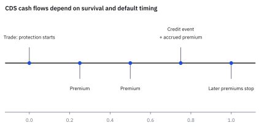
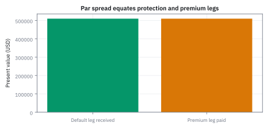
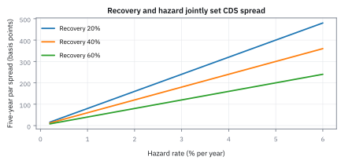
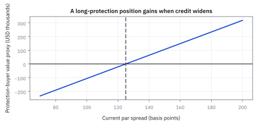
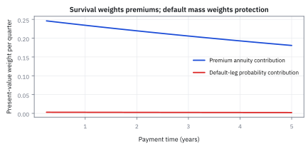

20.7 Credit Default Swaps (CDS)
par spread คือ rate ที่ทำให้ premium leg เท่ากับ default leg ภายใต้ survival, recovery และ settlement convention เดียวกัน
นักลงทุนเข้าทำสัญญา credit default swap (CDS) อายุ 5 ปี บนหนี้ \$10,000,000 จ่ายเบี้ยรายไตรมาส หากอัตราดอกเบี้ย 4.5% อัตราเสี่ยงผิดนัดคงที่ 2.0% ต่อปี และ recovery 40% อัตราเบี้ยยุติธรรม (par spread) ควรเป็นเท่าใด?
เฉลย: 119.99975 basis points (เกือบ 1.20% ต่อปี) คิดเป็นมูลค่าขาชดเชย \$509,378.76 เท่ากับมูลค่าขาเบี้ยพอดี ทำให้สัญญาในวันแรกมีมูลค่าสุทธิเป็นศูนย์โดยไม่ต้องจ่ายเงินก้อนล่วงหน้า (upfront)
ศัพท์ของ protection contract
- credit default swap (CDS)
- สัญญาที่ protection buyer จ่าย premium แลกกับ payment หาก reference entity เกิด credit event ใช้แยก credit exposure ออกจากการถือ cash bond
- protection buyer
- ฝ่ายที่จ่าย periodic premium และรับ default payment เมื่อ credit event เกิด ใช้ hedge หรือเปิด short credit exposure
- protection seller
- ฝ่ายที่รับ premium แต่มีภาระจ่าย loss amount เมื่อ credit event เกิด ใช้รับ long credit exposure
- reference entity
- บริษัทหรือ sovereign ที่ credit event ของมันกำหนด CDS payoff ใช้ระบุ credit risk ซึ่งสัญญาอ้างอิง
- credit event
- เหตุการณ์ตามเอกสารสัญญา เช่น failure to pay หรือ bankruptcy ที่ trigger settlement ใช้กำหนดว่า default leg จ่ายเมื่อไร
- premium leg
- present value ของ scheduled premiums และ accrued premium จนถึง default ใช้เป็นราคาที่ protection buyer จ่าย
- default leg
- present value ของ protection payment ใน credit-event states ใช้เป็นผลประโยชน์ที่ protection buyer รับ
- par spread
- annual CDS premium rate ที่ทำให้ premium leg เท่ากับ default leg ใช้กำหนด fair running coupon ซึ่งทำให้ contract ใหม่มี upfront value ศูนย์
- accrued premium
- premium ตั้งแต่ payment date ล่าสุดถึง default date ใช้ชำระค่าคุ้มครองสำหรับส่วนของงวดที่ผ่านไปก่อน credit event
- upfront payment
- เงินก้อนวันเริ่มที่ชดเชยความต่างระหว่าง standard coupon กับ market par spread ใช้ทำให้ contract fair เมื่อ coupon ถูกกำหนดมาตรฐาน
- physical settlement
- วิธีชำระที่ buyer ส่งมอบ eligible obligation แลกรับ par ใช้เปลี่ยน CDS payoff เป็น par ลบมูลค่าของ deliverable
- cash settlement
- วิธีชำระด้วยเงินจาก par ลบ auction-determined recovery price ใช้หลีกเลี่ยงการส่งมอบ bond จริง
- CDS-bond basis
- ส่วนต่างระหว่าง CDS spread กับ credit spread ของ cash bond หลังปรับ convention ใช้หา relative-value opportunity และ funding/liquidity mismatch
- jump-to-default
- การเปลี่ยนมูลค่าทันทีเมื่อ credit event เกิด ใช้กำหนด tail exposure ที่ spread DV01 ไม่สามารถสรุปได้
- wrong-way risk
- ความเสี่ยงที่ counterparty อ่อนแอลงพร้อม exposure ต่อมันเพิ่ม ใช้ประเมินว่าการซื้อ protection จะยังจ่ายได้ใน state ที่ต้องการหรือไม่
- European Bank for Reconstruction and Development (EBRD)
- ธนาคารเพื่อการบูรณะและพัฒนาแห่งยุโรป ใช้เป็นคู่สัญญาในดีลปี 1994 ที่นับกันว่าเป็น CDS ตัวแรก มีบทบาทเป็นผู้รับความเสี่ยงด้านเครดิตแทนธนาคารผู้ปล่อยกู้
- International Swaps and Derivatives Association (ISDA)
- สมาคมที่ออกสัญญามาตรฐานสำหรับตลาด derivatives ใช้กำหนดนิยามกลางว่าเหตุการณ์แบบไหนนับเป็นการผิดนัด เพื่อให้คู่สัญญาทั่วโลกตีความตรงกันและบังคับใช้ได้จริง
สัญกรณ์ หน่วย และ payment grid
| สัญลักษณ์ | ความหมาย | หน่วย |
|---|---|---|
| $N$ | CDS notional | USD |
| $T_i=i\delta$ | quarterly premium payment date ลำดับที่ $i$ | ปี |
| $n$ | จำนวน premium periods ถึง CDS maturity | จำนวนเต็ม |
| $\delta$ | accrual year fraction ต่อ quarter | ปี |
| $s$ | annual CDS premium spread | ต่อปี |
| $s^*$ | par spread จาก model | ต่อปี |
| $D_i$ | risk-free discount factor ถึง $T_i$ | USD วันนี้ต่อ USD ที่ $T_i$ |
| $Q_i$ | survival probability ถึง $T_i$ | ความน่าจะเป็น |
| $\Delta Q_i$ | default probability ในงวด $(T_{i-1},T_i]$ เท่ากับ $Q_{i-1}-Q_i$ | ความน่าจะเป็น |
| $\lambda$ | constant risk-neutral hazard rate ในตัวอย่าง | ต่อปี |
| $R$ | recovery rate ของ par | สัดส่วน |
| $A_{CDS}$ | มูลค่าปัจจุบันของการจ่ายเบี้ยปีละหนึ่งหน่วยไปจนกว่าจะ default รวมค่าประมาณของเบี้ยค้างจ่ายงวดสุดท้ายแล้ว | ปี |
| $PV_{prem}$ | present value ของ premium leg | USD |
| $PV_{def}$ | present value ของ default leg | USD |
| $V_{buy}$ | contract value จากมุม protection buyer | USD |
| $S$ | spread ของสัญญาในตัวอย่างของคอร์ส | ต่อปี |
| $X_{buy}$ | เงินสุทธิที่ protection buyer ได้ในเส้นทางเดียว ยังไม่คิดลด | USD |
| $h_k$ | โอกาสเจ๊งในไตรมาสที่ $k$ เมื่อรอดมาถึงต้นไตรมาส | ความน่าจะเป็นต่อไตรมาส |
| $a,\ G,\ \Sigma_D$ | ตัวคูณต่อไตรมาสของ discount กับ survival ผลรวมของ $a^i$ และผลรวมของโอกาสเจ๊งที่คิดลดแล้ว | ไม่มีหน่วย |
ที่มาที่ไป: สัญญาที่ทำให้ซื้อขายความเสี่ยงเครดิตแยกจากตัวหนี้ได้
ปัญหาของธนาคารที่ปล่อยกู้ให้บริษัทใหญ่คือ ถ้าอยากลดความเสี่ยงว่าลูกหนี้จะไม่จ่าย ทางเดียวคือขายหนี้นั้นออกไป ซึ่งทำลายความสัมพันธ์กับลูกค้า
ในช่วงต้นทศวรรษ 1990 ทีมที่ธนาคารเพื่อการลงทุนแห่งหนึ่งออกแบบสัญญาที่แยกสองเรื่องนี้ออกจากกัน คือยังถือหนี้ไว้ แต่ซื้อการคุ้มครองจากบุคคลที่สามแยกต่างหาก
ตลาดนี้โตอย่างรวดเร็วและกลายเป็นตัวชี้วัดความเสี่ยงเครดิตที่ตอบสนองเร็วกว่าอันดับเครดิตมาก
บทเรียนที่แพงที่สุดมาในปี 2008 เมื่อพบว่าคนขายการคุ้มครองรายใหญ่อาจล้มพร้อมกับสิ่งที่เราป้องกัน ทำให้การคุ้มครองหายไปพอดีตอนที่ต้องการที่สุด
จุดกำเนิดในประวัติศาสตร์ — จากวิกฤตเรือ Exxon Valdez สู่ตลาด credit derivatives โลก
ในปี 1994 ทีมงานของ J.P. Morgan นำโดย Blythe Masters เผชิญโจทย์ท้าทายครั้งประวัติศาสตร์ เมื่อธนาคารต้องเปิดวงเงินสินเชื่อขนาด 4.8 พันล้านดอลลาร์สหรัฐให้แก่บริษัท Exxon เพื่อรองรับค่าเสียหายจากเหตุการณ์น้ำมันรั่วไหลของเรือบรรทุกน้ำมัน Exxon Valdez
ธนาคารต้องการรักษาความสัมพันธ์อันดีกับลูกค้าชั้นดีอย่าง Exxon ไว้ แต่ในขณะเดียวกันก็ไม่ต้องการแบกรับความเสี่ยงการกระจุกตัวของหนี้ก้อนมหาศาลไว้ในงบดุลเพียงลำพัง หากขายหนี้ออกไปตรง ๆ Exxon อาจรู้สึกว่าธนาคารไม่ไว้วางใจ
ทางออกที่เป็นจุดเปลี่ยนของวงการการเงินคือ การคิดค้นสัญญา Credit Default Swap (CDS) ขึ้นมา โดย J.P. Morgan จ่ายเบี้ยประกันรายงวดให้แก่ธนาคาร European Bank for Reconstruction and Development (EBRD) เพื่อแลกกับข้อตกลงว่าหาก Exxon ผิดนัดชำระหนี้ EBRD จะเป็นผู้ชดเชยความเสียหายให้ โครงสร้างนี้ทำให้ธนาคารสามารถโอนย้ายความเสี่ยงเครดิตออกจากงบดุลได้อย่างเงียบเชียบโดยที่ตัวเงินกู้ยังคงอยู่กับลูกค้าเดิม
modeling convention ของตัวอย่าง USD
สัญญาอายุ 5 ปีจ่าย premium ทุก quarter ด้วย $\delta=0.25$ ใช้ constant risk-free rate 4.5% แบบ continuously compounded, constant risk-neutral hazard 2.0% ต่อปี และ recovery of par 40% Default leg ในแต่ละ quarter ถูกจ่ายที่ period end เพื่อให้ผลรวม deterministic และ accrued premium ประมาณครึ่ง accrual period คูณ default
probability ไม่มี business-day adjustment, restructuring clause, auction timing, counterparty risk หรือ collateral effect Production CDS model ใช้ exact dates และ integrate default timing ให้ละเอียดกว่า
แล้วเอาไปใช้ทำอะไรได้จริงบ้าง
สัญญาที่จ่ายเมื่อบริษัทเจ๊ง ทำให้ซื้อขายความเสี่ยงเครดิตแยกจากตัวตราสารหนี้ได้
ใช้ป้องกันความเสี่ยงว่าลูกหนี้จะไม่จ่าย โดยไม่ต้องขายตราสารที่ถืออยู่
ใช้อ่านว่าตลาดคิดว่าบริษัทหนึ่งเสี่ยงแค่ไหน ซึ่งมักตอบสนองเร็วกว่าอันดับเครดิต
ใช้แสดงมุมมองว่าความเสี่ยงเครดิตจะแย่ลง โดยไม่ต้องยืมตราสารมาขาย
Figure 20.7a — สอง legs หยุดและเริ่มจาก credit event คนละแบบ

buyer จ่าย premium ตาม schedule ตราบใดที่ reference entity รอด เมื่อ credit event เกิด scheduled premiums หลังจากนั้นหยุดและ default payment ถูก trigger พร้อม accrued premium ถึงวันเกิดเหตุ
ขั้นที่ 1 — นิยามของตารางโอกาสรอดและโอกาสเจ๊งรายงวด
สองก้อนนี้เป็น นิยาม ของตัวเลขที่จะใช้ถ่วงน้ำหนักเงินแต่ละงวด ตัวแรกมาจากหัวข้อ 20.6 โดยตรง คือโอกาสรอดถึงวันจ่ายงวดนั้น ตัวที่สองคือโอกาสที่จะเจ๊งภายในงวดนั้นพอดี ซึ่งคือโอกาสรอดถึงต้นงวด ลบโอกาสรอดถึงปลายงวด สองอย่างนี้ใช้คนละที่: ตัวแรกถ่วงเบี้ยที่จ่ายเมื่อยังรอด ตัวที่สองถ่วงเงินชดเชยที่จ่ายเมื่อเจ๊ง การสลับสองตัวนี้คือความผิดพลาดที่พบบ่อยที่สุดในโค้ด CDS
$Q_i$ ถ่วง scheduled payment ที่ต้องรอดถึง date ส่วน $\Delta Q_i$ ถ่วง default payment ของ quarter นั้น
ขั้นที่ 2 — นิยามของขาเบี้ย รวมส่วนที่ค้างจ่ายตอนเจ๊ง
บรรทัดนี้เป็น นิยาม ของวิธีคำนวณขาเบี้ย ตามกติกาของสัญญา ก้อนแรกคือเบี้ยที่จ่ายตามกำหนด ซึ่งจ่ายเฉพาะเมื่อยังรอด จึงถ่วงด้วยโอกาสรอด ก้อนที่สองคือรายละเอียดที่คนมักลืม: ถ้าเจ๊งกลางงวด ผู้ซื้อยังต้องจ่ายเบี้ยส่วนที่ค้างอยู่ เราประมาณว่าเจ๊งกลางงวดโดยเฉลี่ย จึงคิดครึ่งหนึ่งของงวด ซึ่งเป็นการประมาณ ไม่ใช่ความจริง ผลรวมในวงเล็บถูกตั้งชื่อไว้ เพราะขั้นที่ 4 จะใช้มันเป็นตัวส่วน
พจน์แรกคือ quarterly premiums เมื่อรอด พจน์ที่สองประมาณ accrued premium ครึ่งงวดใน default states และผลรวมในวงเล็บคือ risky annuity
ที่มาทีละขั้น — ยุบผลรวมของขาเบี้ยและเบี้ยค้างจ่ายเป็นค่าเฉลี่ยสี่เหลี่ยมคางหมู
สูตรนี้แปลงการคำนวณที่ต้องแยกสองก้อน (เบี้ยปกติบวกเบี้ยค้างจ่าย) ให้เหลือเพียงการถ่วงน้ำหนักด้วยค่าเฉลี่ยโอกาสรอดต้นงวดและปลายงวดก้อนเดียว ในทางปฏิบัติที่งวดการจ่ายเป็นรายไตรมาส การประมาณจุดกึ่งกลางนี้มีความแม่นยำสูงมาก และเป็นมาตรฐานที่ International Swaps and Derivatives Association (ISDA) นำมาใช้ใน standard model ทางการ
สมมติว่าเมื่อเกิดการผิดนัดชำระหนี้ขึ้นภายในงวด เหตุการณ์นั้นมีโอกาสเกิดขึ้นสม่ำเสมอตลอดช่วงเวลา ผู้ซื้อประกันจึงจ่ายเบี้ยเฉลี่ยค้างชำระเป็นเวลาครึ่งงวด $\delta/2$
จัดรูปพีชคณิตโดยดึงตัวคูณร่วม $\delta/2$ ออกมาหน้าผลรวม จะเห็นว่าพจน์ $2Q_i - Q_i$ รวมกันเหลือเพียง $Q_i$ เดี่ยว ๆ
ผลลัพธ์คือค่าเฉลี่ยแบบสี่เหลี่ยมคางหมูของโอกาสรอดระหว่างต้นงวด $Q_{i-1}$ กับปลายงวด $Q_i$ ซึ่งคิดลดด้วย $D_i$ ทำให้ risky annuity อยู่ในรูปที่กะทัดรัดและคำนวณได้เร็วขึ้นมาก
ขั้นที่ 3 — นิยามของขาชดเชย: จ่ายเฉพาะเมื่อเจ๊ง และจ่ายเฉพาะส่วนที่หาย
บรรทัดนี้เป็น นิยาม ของวิธีคำนวณขาชดเชย ก้อนหน้าคือสัดส่วนที่หายไปจริง ซึ่งคือหนึ่งลบสัดส่วนที่ได้คืน ในผลรวมใช้โอกาสเจ๊งรายงวดจากขั้นที่ 1 ไม่ใช่โอกาสรอด เพราะเงินก้อนนี้จ่ายตอนเจ๊ง การบวกทุกงวดทำได้เพราะการเจ๊งในงวดต่างกันเป็นเหตุการณ์ที่ไม่ทับกัน ซึ่งเป็นกฎเดียวกับหัวข้อ 1.1 และเงินจะเกิดได้ครั้งเดียวเท่านั้นตลอดอายุสัญญา
loss given default คูณ probability ของ default แต่ละงวดและ discount ถึงเวลาจ่าย จากนั้นรวมทุก mutually exclusive default period
ขั้นที่ 4 — derive par spread จากมูลค่าเริ่มต้นศูนย์
สำหรับสัญญาที่ไม่มีเงินจ่ายล่วงหน้า เราเลือกอัตราเบี้ยให้มูลค่าตอนเปิดเป็นศูนย์ สูตรข้างล่างใช้เงื่อนไขเดียวกับอัตรา swap ในหัวข้อ 20.2 ทุกประการ ต่างแค่สิ่งที่แลกกันเป็นความเสี่ยงเจ๊ง ไม่ใช่ความเสี่ยงอัตราดอกเบี้ย
อัตราเบี้ยมาตรฐานนิยามจากเงื่อนไขข้อเดียว สัญญาต้องมีมูลค่าศูนย์ตอนเซ็น ไม่อย่างนั้นฝ่ายหนึ่งต้องจ่ายอีกฝ่ายล่วงหน้า
แทนสองขาจากขั้นที่ 2 และ 3 แล้วตัดเงินต้นออกทั้งสองข้าง เงินต้นจึงไม่มีผลต่ออัตรา เพราะมันคูณอยู่ทั้งสองขา ซึ่งเป็นเหตุผลเดียวกับหัวข้อ 20.2
หารด้วยก้อนที่ตั้งชื่อไว้แล้วประกอบทั้งหมด อัตราเบี้ยคืออัตราส่วนระหว่างความเสียหายที่คาดหวัง กับมูลค่าของการจ่ายหนึ่งหน่วยทุกงวดตราบที่ยังไม่เจ๊ง
สิ่งที่ต้องสังเกตคือทั้งเศษและส่วนมีโอกาสเจ๊งอยู่ด้วยกันทั้งคู่ การเปลี่ยนสมมติฐานเรื่องเงินคืนจึงกระทบทั้งสองฝั่ง ไม่ใช่ฝั่งเดียว ผลสุทธิจึงเล็กกว่าที่คนคาดเสมอ
ความสัมพันธ์กับ Hazard Rate — ประมาณ Par Spread ในรูป (1 - R)h / (1 - h/2)
สมการนี้เผยให้เห็นหัวใจของการตั้งราคา CDS ในระดับสัญชาตญาณ หากไม่มีการคิดเบี้ยค้างชำระ ตัวหารจะเป็นหนึ่งและ par spread จะเท่ากับ $(1 - R)h$ พอดี
การมีตัวหาร $1 - h/2$ ทำให้ par spread ขยับกว้างกว่า expected loss ธรรมดาเล็กน้อย เพื่อชดเชยข้อเท็จจริงที่ว่าผู้ซื้อประกันจ่ายเบี้ยไม่เต็มงวดเมื่อเกิดเหตุผิดนัดชำระหนี้ขึ้นระหว่างทาง
หากสมมติให้อัตราความเสี่ยงผิดนัดต่องวดมีค่าคงที่ $h$ โอกาสรอดปลายงวดจะเท่ากับโอกาสรอดต้นงวดคูณด้วย $1 - h$ ทำให้ทั้งผลต่างและผลบวกของโอกาสรอดแปรผันตรงกับ $Q_{i-1}$
เมื่อแทนค่าลงในสูตร par spread พจน์ผลรวมคิดลดถ่วงน้ำหนัก $\sum D_i Q_{i-1}$ ที่อยู่ทั้งเศษและส่วนจะตัดกันหมดไปอย่างลงตัว
ผลลัพธ์แสดงให้เห็นว่า par spread มีค่าเพิ่มขึ้นตาม hazard rate $h$ และลดลงตาม recovery rate $R$ โดยมีตัวหาร $1 - h/2$ ชดเชยการคิดลดเบี้ยค้างจ่ายครึ่งงวด
แกะผลรวม 20 งวดก่อนแทนราคา
เลขชี้กำลังมาจากหนึ่งไตรมาส: $0.02(0.25)=0.005$, $0.045(0.25)=0.01125$ และ $(0.045+0.02)(0.25)=0.01625$ ส่วน $G$ คือ $\sum_{i=1}^{20}a^i$ และ $\Sigma_D$ ย่อจาก $\sum_{i=1}^{20}D_i\Delta Q_i$
งวดแรกมีโอกาสผิดนัดราว 0.00499 ไม่ใช่โอกาสรอด 0.99501 จึงใช้คนละคอลัมน์ใน premium leg กับ default leg คูณค่าคิดลดของ quarter แรกได้ contribution ราว 0.00493
เพราะ rate กับ hazard คงที่ ผลคูณ discount กับ survival ในแต่ละ quarter เป็น $a^i$ ใช้ผลรวม geometric จากบทที่ 1 รวม 20 งวดได้ G งวดผิดนัดต่างจากงวดรอดด้วยตัวคูณ exponential ของ hazard หนึ่ง quarter ลบหนึ่ง จึงได้ผลรวม 0.0848964603
annuity ประกอบด้วยเบี้ยที่จ่ายเมื่อรอด 0.25 คูณ G และเบี้ยค้างครึ่งงวดเมื่อผิดนัด 0.125 คูณผลรวม default ทั้งสองก้อนมีหน่วยปี ต่อไปจึงคูณ notional และ spread ได้ USD ใช้เลขเต็มก่อนปัด
ขั้นที่ 5 — default leg เป็น USD
แทนตัวเลขจริง เริ่มจากขาชดเชยก่อน
protection payment ที่คาดภายใต้ valuation measure มี present value ประมาณ \$509,379
ขั้นที่ 6 — par spread และ equality check
หารด้วย annuity ได้เบี้ยยุติธรรม แล้วตรวจย้อนว่าสองขาเท่ากันจริง
par spread เกือบ 120 basis points และ premium leg ที่ rate นี้เท่ากับ default leg \$509,378.76 ภายใน rounding
Figure 20.7b — ที่ par สอง legs มี present value เท่ากัน

default leg กับ premium leg ที่ 119.99975 basis points สมดุลกัน Contract ใหม่จึงไม่มี upfront value แม้แต่ละ leg มี present value มากกว่าครึ่งล้าน USD
ขั้นที่ 7 — mark-to-market ของ contract coupon 125 basis points
ตัวอย่างต่อไปกำหนด contract coupon 125 basis points เพื่อแสดง mark-to-market ตัวเลขนี้เป็นสมมติฐาน ไม่ใช่การระบุ standard coupon ของตลาด ส่วนต่างนั้นคือกำไรขาดทุนที่ต้องบันทึก
buyer ตกลงจ่าย coupon สูงกว่า fair rate จึงต้องได้รับ upfront \$21,225.22 เพื่อทำให้ trade fair; หากจ่าย upfront แทน เครื่องหมายเป็นลบจากมุม buyer
standard coupon กับ upfront แยก quote ออกจาก economics
ตลาดอาจกำหนด standard running coupon แล้วชำระส่วนต่าง fair value เป็น upfront ค่า upfront จากมุม protection buyer ก่อน settlement convention คือ $PV_{def}-PV_{prem}$ Contract coupon ไม่ใช่ current market spread หลัง trade และการ mark-to-market ต้องใช้ remaining schedule, current curve, current survival และ accrued amount ไม่ใช่คูณ spread difference ด้วย original maturity แบบตรง ๆ
หลังการปฏิรูป ISDA Big Bang ปี 2009 ตลาด CDS ได้เปลี่ยนมาใช้คูปองมาตรฐานคงที่ (เช่น 100 bps สำหรับ investment grade และ 500 bps สำหรับ high yield) และกำหนดวันครบกำหนดมาตรฐาน 4 วันต่อปี (20 มีนาคม, มิถุนายน, กันยายน และธันวาคม) โดยส่วนต่างระหว่าง par spread กับ standard coupon จะถูกชำระเป็นเงินก้อน upfront ณ วันเริ่มสัญญา
Figure 20.7c — par spread เกือบเป็น hazard คูณ loss แต่ recovery เปลี่ยนความชัน

ภายใต้ constant hazard และ quarterly grid เส้นเกือบตรง Recovery ต่ำทำให้ protection payout สูงและ par spread สูงขึ้น ความใกล้กับ $\lambda(1-R)$ เป็น approximation จาก convention นี้ ไม่ใช่ identity สากล
Figure 20.7d — buyer value เพิ่มเมื่อ market spread กว้างขึ้น

สำหรับ contract coupon 125 basis points protection buyer มี negative value เมื่อ market par spread ต่ำกว่า coupon และ positive value เมื่อสูงกว่า ความชันใกล้จุดนี้คือ risky annuity คูณ notional
ขั้นที่ 8 — hazard credit01 แบบ bump-and-revalue
ปิดท้ายด้วยคำถามของโต๊ะความเสี่ยง คือถ้าความเสี่ยงเจ๊งแย่ลงนิดเดียว มูลค่าขยับเท่าไร
เมื่อ hazard เพิ่มหนึ่ง basis point contract coupon 125 basis points มีค่าต่อ protection buyer เพิ่มประมาณ \$2,551 โดยคง recovery และ discount curve ไว้
Figure 20.7e — premium และ default probability ถูกถ่วงคนละเหตุการณ์ทุก quarter

scheduled premium contribution ลดตาม discount และ survival ส่วน default-leg contribution ต่อ quarter ลดช้ากว่าในช่วงสั้น การแยก arrays สองชุดนี้ช่วยจับ bug ที่นำ $Q_i$ ไปใช้แทน $\Delta Q_i$
ขั้นที่ 9 — เงินที่ไหลจริงเมื่อเจ๊งในเดือนที่ 16
ตัวอย่างของคอร์ส: CDS 2 ปี notional \$1,000,000 spread 160 basis points จ่ายรายไตรมาส recovery 45% และบริษัทเจ๊งในเดือนที่ 16 ของ 24 เดือน
buyer จ่ายเบี้ยงวดละ $S\,N\,\delta$ กับ $\delta=1/4$ ในเดือน 3, 6, 9, 12 และ 15 เมื่อเจ๊งในเดือน 16 สัญญาจบที่วันจ่ายถัดไปคือเดือน 18 buyer จ่ายเบี้ยค้างของเดือน 15 ถึง 16 หนึ่งเดือน และรับ $(1-R)N$ ในวันเดียวกัน
สไลด์เขียนเบี้ยค้างเป็น $(t_k-\tau)\,S\,N$ ซึ่งกลับด้าน ช่วงที่คุ้มครองแล้วแต่ยังไม่จ่ายคือ $\tau-t_{k-1}$ และตัวอย่างในสไลด์เองก็คิดหนึ่งเดือนจากเดือน 15 ถึง 16 วันจ่ายจริงของตลาดคือ 20 มี.ค. 20 มิ.ย. 20 ก.ย. และ 20 ธ.ค.
นี่คือเงินของเส้นทางเดียว ยังไม่คิดลดและไม่ถ่วงโอกาส ขั้นที่ 2 และ 3 คือค่าเฉลี่ยของทุกเส้นทาง โดยสมมติว่าเจ๊งกลางงวดโดยเฉลี่ย จึงคิดเบี้ยค้างครึ่งงวด
ขั้นที่ 10 — CDS 2 ปีในไฟล์ Excel ของคอร์ส
ไฟล์เดียวกับหัวข้อ 20.6 เอา hazard ต่อครึ่งปีที่ calibrate ได้มาหารสองเป็นต่อไตรมาส ใช้ดอกเบี้ย 1% ทบทุกไตรมาส recovery 45% และ notional \$1,000,000
ขาเบี้ยมีสองก้อน เบี้ยตามกำหนด 41,396.31 และเบี้ยค้างครึ่งงวด 206.97 ก้อนหลังเล็กเพราะโอกาสเจ๊งต่อไตรมาสราว 1% และค้างเพียงครึ่งไตรมาส spread 218.8895 basis points คือค่าที่ไฟล์เก็บไว้ในช่อง Spread และทำให้สองขาเท่ากันพอดี
สองแถวล่างคือสูตรประมาณ $(1-R)h/(\delta(1-h/2))$ ของหัวข้อนี้ ใช้ hazard ปีแรกได้ 222.67 และปีที่สองได้ 214.92 basis points ค่าจริงอยู่ระหว่างสองค่านี้
สไลด์ใช้ความสัมพันธ์ $S\approx(1-R)h$ อ่านกราฟ CDS 5 ปีของ Ford, General Motors และ American International Group (AIG) ในเก้าเดือนแรกของปี 2008 ถ้า recovery คงที่ spread ที่พุ่งขึ้นก็คือ hazard ที่ตลาดคิดพุ่งขึ้นในสัดส่วนเดียวกัน
ศัพท์ชุดที่สอง: CDS ในตลาดจริง
- American International Group (AIG)
- บริษัทประกันรายใหญ่ของสหรัฐที่ขาย CDS จำนวนมากก่อนปี 2008 ใช้เป็นตัวอย่างของผู้ขาย protection ที่ล้มเสียเองตอนที่ protection ต้องจ่าย
- naked CDS
- การซื้อ protection โดยไม่ได้ถือหนี้ของบริษัทนั้น ใช้เดิมพันว่าเครดิตจะแย่ลง
- over-the-counter
- การซื้อขายตกลงกันเองระหว่างสองฝ่ายนอกตลาดกลาง ทำให้คนนอกไม่เห็น position ทั้งหมด
- contagion
- การที่ความเสียหายของผู้เล่นรายหนึ่งลามไปถึงรายอื่นผ่านสัญญาที่ผูกกัน ใช้อธิบายว่าทำไมการล้มรายเดียวกลายเป็นวิกฤต
CDS ไม่ใช่ประกัน และบทเรียนจากปี 2008
CDS ใช้ป้องกันความเสี่ยงได้ แต่ต่างจากกรมธรรม์ประกันมาก ประกันต้องมีส่วนได้เสียในสิ่งที่เอาประกัน แต่ CDS ซื้อ protection ได้แม้ไม่ได้ถือหนี้ของบริษัทนั้น และสร้างได้ง่าย ช่วงแรกแทบไม่มีการกำกับ
เดิม CDS มีไว้ hedge ลดความเสี่ยงที่กระจุกกับลูกค้ารายใหญ่โดยไม่ต้องขายหนี้ให้ลูกค้ารู้ และ hedge บริษัทที่ไม่มีหุ้นกู้ซื้อขายในตลาด แต่การเก็งกำไรกลายเป็นการใช้งานหลักอย่างรวดเร็ว
เหตุผลคือขาย protection ได้เบี้ยโดยไม่ต้องลงเงินก้อนแรก จึงใช้ leverage ได้ ปรับ exposure ได้ตามต้องการ แสดงมุมมองว่าเครดิตจะแย่ลงได้ง่ายกว่า short หุ้นกู้ และเล่นส่วนต่างระหว่าง coupon ของหุ้นกู้กับ CDS spread
ตลาดโตจน notional รวมปลายปี 2007 อยู่ที่ 62 ล้านล้าน USD ส่วน Depository Trust and Clearing Corporation ประเมิน gross notional ปี 2012 ที่ 25 ล้านล้าน USD
ในวิกฤต 2008 CDS ซื้อขายแบบ over-the-counter ไม่มีใครเห็น position ทั้งหมด จึงประเมินไม่ได้ว่าสถาบันไหนเสี่ยง และไม่มีใครไว้ใจคู่สัญญา AIG ใช้อันดับเครดิตสูงของตัวเองขาย CDS ราว \$500,000 ล้าน
dealer ไม่กี่รายจึงแบกความเสี่ยงมหาศาลที่ผูกกันไปมา จนกลัว contagion และ naked CDS ย้อนกลับมาทำร้ายบริษัทได้ คนซื้อ protection มาก spread ก็กว้าง บริษัทดูเสี่ยงขึ้น ต้นทุนกู้เงินแพงขึ้น และอาจล้มจริง
ISDA ทำสัญญาเป็นมาตรฐานตั้งแต่ปี 1999 แก้ในปี 2003 และ 2009 แต่คำถามยากยังอยู่ อะไรนับเป็น credit event ใครกำหนด recovery spread ตั้งอย่างไรสำหรับ junk bond, investment grade และ sovereign จ่ายเบี้ยล่วงหน้าหรือตามหลัง และ quote spread อย่างไร
risk interpretation ที่ spread DV01 ตัวเดียวไม่พอ
long protection มี positive exposure ต่อ spread widening และ hazard increase แต่มี jump-to-default ใกล้ $N(1-R)$ หัก mark กับ accrued premium ซึ่งใหญ่กว่า one-basis-point sensitivity มาก Recovery sensitivity, curve DV01, roll-down, carry และ counterparty exposure ต้องรายงานแยก หาก protection seller มีความสัมพันธ์กับ reference entity wrong-way risk ทำให้ model ที่ถือ default independent ประเมิน hedge สูงเกินจริง
implementation และ calibration recipe
สร้าง exact quarterly schedule และ accrual fractions, bootstrap piecewise hazard จาก par spreads โดยใช้ discount curve และ recovery ที่ freeze, คำนวณ premium กับ default legs จาก arrays คนละชุด, รวม accrued-on-default integration และ reprice input quotes กลับเป็นศูนย์ ทดสอบ zero hazard, zero recovery, maturity boundary,
premium-default equality, monotonicity ต่อ hazard และ sign จากทั้ง buyer กับ seller สำหรับ market quote bumps ให้ rebuild hazard curve ก่อน revalue เพื่อได้ bucketed spread sensitivity
คำตอบ — CDS 5 ปีบนหนี้ \$10 ล้าน
คำถาม: นักลงทุนเข้าทำ CDS 5 ปีบนหนี้ \$10,000,000 จ่ายเบี้ยรายไตรมาส ดอกเบี้ย 4.5% hazard คงที่ 2.0% ต่อปี และ recovery 40% par spread ควรเป็นเท่าใด และถ้าสัญญาใช้ coupon 125 basis points ใครต้องจ่ายใครเท่าไร?
ของที่มี: ขั้นที่ 1 ถึง 8
1. ผลรวมโอกาสเจ๊งที่คิดลดแล้วคือ 0.0848964603 และ risky annuity คือ 4.2448318563 ปี
2. default leg \$509,378.76 และ par spread 119.99975 basis points
3. ที่ coupon 125 basis points buyer ต้องได้ upfront \$21,225.22 และถ้า hazard เพิ่มหนึ่ง basis point มูลค่าของ buyer เพิ่ม \$2,551.30
ตรวจเองใน 10 วินาที: 0.60 × 0.0848964603 / 4.2448318563 = 0.0120 เท่ากับ 0.60 × 0.02 ตามสูตรประมาณ
แปลว่าอะไร: par spread คือความเสียหายที่คาดต่อปีที่ตลาดคิด สัญญาที่ coupon ต่างจาก par ต้องชดเชยกันด้วยเงินก้อนตอนเริ่ม
ตัวอย่างที่สอง — CDS 2 ปีของคอร์ส
คำถาม: CDS 2 ปี notional \$1,000,000 spread 160 basis points จ่ายรายไตรมาส recovery 45% ถ้าบริษัทเจ๊งในเดือนที่ 16 เงินไหลอย่างไร และถ้าใช้ hazard ของไฟล์ Excel กับดอกเบี้ย 1% par spread ควรเป็นเท่าไร?
ของที่มี: ขั้นที่ 9 และ 10
1. buyer จ่ายเบี้ย \$4,000 ห้างวดในเดือน 3 ถึง 15 และเบี้ยค้าง \$1,333.33 ในเดือน 18
2. seller จ่าย \$550,000 ในเดือน 18 buyer ได้สุทธิ \$528,666.67 ก่อนคิดลด
3. par spread ในไฟล์คือ 218.8895 basis points ทั้งสองขามีค่า \$41,603.28
ตรวจเองใน 10 วินาที: 0.55 × 4 × 1.007% = 2.22% ใกล้ 218.89 basis points
แปลว่าอะไร: เส้นทางเดียวให้ผลสุดขั้ว buyer จ่าย 21,333.33 แต่ได้ 550,000 ราคาที่ยุติธรรมมาจากการเฉลี่ยทุกเส้นทางด้วยโอกาสรอดและโอกาสเจ๊ง
กับดัก: failure modes และ model limits
อย่าใช้ survival probability แทน period default probability, ลืม accrued premium, สลับ buyer กับ seller sign หรือคูณ notional ด้วย spread โดยไม่คูณ risky annuity.
Recovery assumption, นิยาม credit event, ของที่ส่งมอบได้, auction settlement, funding และ counterparty risk ล้วนเปลี่ยนราคา. CDS-bond basis ก็ไม่ใช่ arbitrage ฟรี เพราะ cash bond มี funding กับ liquidity ปนอยู่ด้วย.
par spread ทำให้ present value เป็นศูนย์แค่ในวันแรก ไม่ได้ทำให้ความเสี่ยงหายไป—มันแค่แต่งหน้าเลขให้ดูเหมือนศูนย์.
ข้อจำกัด: วิธีนี้สมมติอะไร และของจริงเป็นอย่างไร
| เรื่อง | วิธีนี้สมมติว่า | ของจริงเป็นอย่างไร | ผลที่ตามมาเวลาใช้งาน |
|---|---|---|---|
| นิยามเหตุการณ์ | รู้ชัดว่าอะไรนับเป็นการเจ๊ง | นิยามในเอกสารมีรายละเอียดที่ตีความได้ | เคยมีข้อพิพาทว่าเหตุการณ์นับหรือไม่นับ ซึ่งเปลี่ยนผลลัพธ์ทั้งหมด |
| ความเสี่ยงคู่สัญญา | คู่สัญญาจ่ายได้แน่ | คู่สัญญาอาจเจ๊งพร้อมกับสิ่งที่เราป้องกัน | การป้องกันหายไปพอดีตอนที่ต้องการ ซึ่งเกิดขึ้นจริงในปี 2008 |
| สภาพคล่อง | ซื้อขายได้เมื่อต้องการ | สภาพคล่องหายไปในภาวะตึงตัว | ราคาที่เห็นอาจไม่ใช่ราคาที่ทำได้จริงในวันที่ต้องรีบ |
แถวกลางเป็นบทเรียนตรงจากวิกฤติปี 2008 และเป็นเหตุผลที่ต้องมีหลักประกันในสัญญาสมัยใหม่
ตั้ง par spread และ mark contract ซ้ำได้
import numpy as np
N, r, lam, R, delta, n = 10_000_000, 0.045, 0.02, 0.40, 0.25, 20
t = np.arange(1,n+1)*delta
D = np.exp(-r*t)
Q = np.exp(-lam*np.arange(n+1)*delta)
dq = Q[:-1]-Q[1:]
default_sum = np.sum(D*dq)
annuity = np.sum(delta*D*Q[1:])+0.5*delta*default_sum
par = (1-R)*default_sum/annuity
default_leg = N*(1-R)*default_sum
buyer_value = default_leg-N*0.0125*annuity
assert abs(par*1e4-119.99975000062507) < 1e-9
assert abs(default_leg-509_378.76155603345) < 1e-8
assert abs(buyer_value+21_225.220487033486) < 1e-8production code ต้อง integrate default within period ให้ละเอียดกว่า midpoint approximation และผูก schedule กับ contractual calendar, accrual convention และ settlement terms
ตัวอย่าง CDS 2 ปีของคอร์ส และไฟล์ Excel
import numpy as np
S, N, R = 0.016, 1_000_000, 0.45
premiums = [S * N / 4] * 5 # months 3, 6, 9, 12, 15
accrued = S * N / 12 # month 15 to 16, paid in month 18
protection = (1 - R) * N
assert premiums[0] == 4000 and round(accrued, 2) == 1333.33 and protection == 550_000
assert round(protection - sum(premiums) - accrued, 2) == 528_666.67
hq = np.r_[[0.02014057304019802 / 2] * 4, [0.01944310333866298 / 2] * 4]
Q = np.r_[1, np.cumprod(1 - hq)]
D = (1 + 0.01 / 4) ** -np.arange(1, 9)
dq = Q[:-1] - Q[1:]
scheduled = np.sum(0.25 * Q[1:] * D)
annuity = scheduled + np.sum(0.125 * dq * D)
default_sum = np.sum(dq * D)
par = (1 - R) * default_sum / annuity
assert abs(par * 1e4 - 218.8895) < 1e-4
assert abs(N * (1 - R) * default_sum - 41_603.28) < 0.01
assert abs(N * par * scheduled - 41_396.31) < 0.01ตัวแปร scheduled คือเบี้ยตามกำหนด ส่วน annuity รวมเบี้ยค้างครึ่งงวดแล้ว เหมือนสองคอลัมน์ในไฟล์
จาก credit pricing ไป numerical calibration
ตอนนี้ curve, rate options, short-rate parameters, hazard และ CDS legs ถูกเขียนเป็น pricing functions แล้ว ขั้นต่อไปคือทำให้ solver เสถียรและตรวจ convergence หัวข้อถัดไปของหนังสือจึงเข้าสู่ numerical methods สำหรับ pricing กับ calibration โดยเริ่มจาก grids และ finite differences
สรุปที่ใช้ได้จริง
- protection buyer จ่าย premium leg และรับ default leg ส่วน protection seller อยู่ฝั่งตรงข้าม
- par spread เกิดจาก equality ของสอง legs ภายใต้ discount, survival, recovery, accrual และ settlement convention เดียวกัน
- ตัวอย่าง 5 ปีให้ par spread 119.99975 basis points, default leg \$509,378.76 และ contract coupon 125 basis points มี buyer value -\$21,225.22 ก่อน upfront
- hazard bump หนึ่ง basis point เพิ่ม buyer value ประมาณ \$2,551 แต่ jump-to-default exposure ใหญ่กว่ามาก
- survival $Q_i$ ใช้กับ premium ส่วน period default mass $Q_{i-1}-Q_i$ ใช้กับ protection payment
- ตัวอย่าง 2 ปีของคอร์ส: เจ๊งเดือนที่ 16 buyer จ่าย 4,000 ห้างวดกับเบี้ยค้าง 1,333.33 และรับ 550,000 ส่วนไฟล์ Excel ให้ par spread 218.8895 basis points
- CDS ต่างจากประกันเพราะซื้อได้โดยไม่ถือหนี้ และการซื้อขายแบบ over-the-counter ที่มองไม่เห็นคือต้นเหตุหนึ่งของวิกฤต 2008